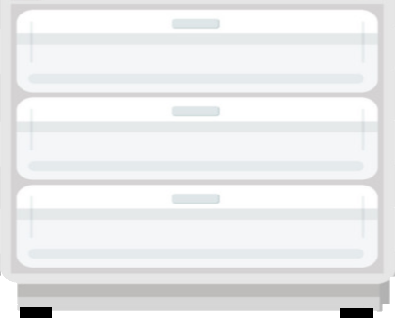
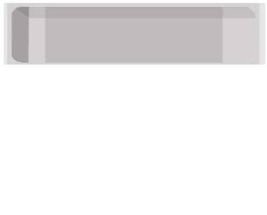
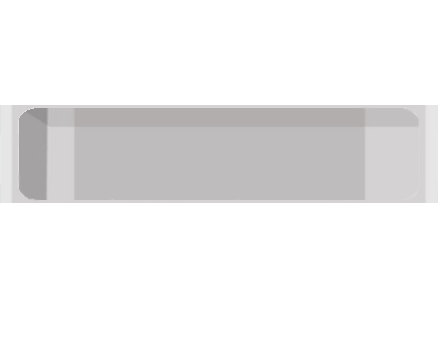
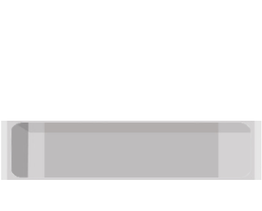

<div class="supermain">
        <div id="main">
                <div class="dosColumnas">
                        <figure id=figura appStyleGetter [height]="height" [width]="width">
                                <map name=recortes id=recortes>
                                      <!--helado-->
                                      <area shape=rect
                                      [attr.coords]="mapCoorHelado" class="pointer" (click)="openDialog('helado')">
                                      <!--churro-->
                                      <area shape=rect
                                      [attr.coords]="mapCoorChurro" class="pointer" (click)="openDialog('churros')">
                                       <!--Tarta-->
                                      <area shape=rect
                                       [attr.coords]="mapCoorTarta" class="pointer" (click)="openDialog('tarta')">
                                        <!--Pizza-->
                                      <area shape=rect
                                       [attr.coords]="mapCoorPizza" class="pointer" (click)="openDialog('pizza-congelada')">
                                       <!--Patatas-->
                                      <area shape=rect
                                       [attr.coords]="mapCoorPatata" class="pointer" (click)="openDialog('patatas-congeladas')">
                                       <!--Verduras-->
                                      <area shape=rect
                                       [attr.coords]="mapCoorVerduras" class="pointer" (click)="openDialog('verduras-congeladas')">
                                       <!--Pescado-->
                                      <area shape=rect
                                      [attr.coords]="mapCoorPescado" class="pointer" (click)="openDialog('pescado-congelado')">
                                      <!--Carne-->
                                      <area shape=rect
                                        [attr.coords]="mapCoorCarne" class="pointer" (click)="openDialog('carne-congelada')">
                                </map>
                                
                                <!--IMPORTANTE CAPA ARRIBA CUANDO SE SELECIONA ALGO-->
                                
                                
                                
                                
                              
                                  <!--USA EL MAPS: ES TRANSPARENTE-->
                                <!--Imagenes de los alimentos-->
                                <div *ngFor="let alimento of alimentos">
                                        <div *ngIf="arrayCajonIsOpen[alimento.cajon]">
                                             0"
                                            src="{{alimento.img.freezer.rutaOk}}"
                                            class="imagen" usemap=#recortes> 
                                
                                             
                                        </div>
                                    </div>
                                   <!--Fin Imagenes de los alimentos-->
                              
                              </figure>

                              <app-mostrador-de-alimentos [alimentos]="alimentos"></app-mostrador-de-alimentos>

                              <!--
                              <svg xmlns="http://www.w3.org/2000/svg" version="1.1" >
                                  <defs>
                                      <clipPath id=A1>
                                          <polygon [attr.points]="mapCoorABCD"></polygon>
                                      </clipPath>
                                      <clipPath id=A2>
                                          <polygon [attr.points]="mapCoorEFGH" ></polygon>
                                      </clipPath>
                                      <clipPath id=A3>
                                          <polygon [attr.points]="mapCoorIJKL" ></polygon>
                                      </clipPath>
                                  </defs>
                              </svg>
                            -->
                        </div>
                </div>
            
            <div id="navegadorFridge">
                <button (click)="abrirCajon1()"
                mat-raised-button  
                class="flex-icon" >
                    <mat-icon>home</mat-icon>
                    <p class="p">Cajon1</p>
                </button>
                <button (click)="abrirCajon2()"
                mat-raised-button  color="primary"
                class="flex-icon" >
                    <mat-icon>home</mat-icon>
                    <p class="p">Cajon2</p>
                </button>
                <button (click)="abrirCajon3()"
                mat-raised-button  color="accent"
                class="flex-icon" >
                    <mat-icon>home</mat-icon>
                    <p class="p">Cajon3</p>
                </button>
                <a mat-raised-button routerLink="../">
                    <mat-icon>exit_to_app</mat-icon>
                </a>
            </div>
</div>